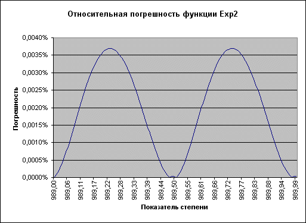

Как возвести в степень?
function Degree(const DegBasis, DegParam: Extended): Extended; asm // Вход: DegBasis, DegParam --> в стеке // Выход: Result --> ST(0) // Примечание: // В случае некорректных данных в ST(0) возвращается DegParam XOR EDX, EDX FLD DegParam FTST FNSTSW AX SAHF JNZ @@DegParam_is_not_0 FFREE ST FLD1 JMP @@exit @@DegParam_is_not_0: JC @@DegParam_is_less_than_0 JMP @@cmp_DegBasis_to_0 @@DegParam_is_less_than_0: OR EDX, 1 @@cmp_DegBasis_to_0: FLD DegBasis FTST FNSTSW AX SAHF JNZ @@DegBasis_is_not_0 TEST EDX, 1 JZ @@DegParam_is_greater_than_0 FSTP ST JMP @@exit @@DegParam_is_greater_than_0: FSTP ST(1) JMP @@exit @@DegBasis_is_not_0: TEST BYTE PTR DegBasis + 9, 80H JZ @@DegBasis_is_greater_than_0 FABS FXCH OR EDX, 2 FLD ST FRNDINT FSUB ST, ST(1) FTST FNSTSW AX SAHF FSTP ST JZ @@DegParam_is_integer FLD1 FDIV ST, ST(1) FABS FLD1 FCOMP FNSTSW AX SAHF JC @@1_div_Abs_DegParam_greater_or_equal_to_1 JZ @@1_div_Abs_DegParam_greater_or_equal_to_1 FSTP ST FSTP ST(1) JMP @@exit @@1_div_Abs_DegParam_greater_or_equal_to_1: FISTP QWORD PTR @@Int_64 TEST BYTE PTR @@Int_64, 1 JNZ @@continue FSTP ST(1) JMP @@exit @@DegParam_is_integer: FLD ST FISTP QWORD PTR @@Int_64 TEST BYTE PTR @@Int_64, 1 JNZ @@continue XOR EDX, EDX @@continue: FXCH @@DegBasis_is_greater_than_0: FYL2X FLD ST FRNDINT FSUB ST(1), ST FXCH ST(1) F2XM1 FLD1 FADD FSCALE FSTP ST(1) TEST EDX, 2 JZ @@exit FCHS JMP @@exit @@Int_64: DQ 0 @@exit: FWAIT end;http://forum.pascal.dax.ru/
Это может звучать тривиально, но как мне возвести число в степень? Например, 2^12 = 4095.
На самом деле вопрос далеко не тривиальный. Проблема в том, что сам алгоритм функции далеко не прост. Функцией Power(X, N) (т.е. X^N) должны четко отслеживаться несколько возможных ситуаций:
X любое число, N = 0
X = 1, N любое число
X = 0 и N > 0
X = 0 и N < 0
X > 0
X < 0 и N нечетное целое
X < 0 и N целое
X < 0 и N нецелое
Посмотрите на следующую, абсолютно правильно работающую функцию (тем не менее она может быть и не самой эффективной!):
interface
type
EPowerException = class(Exception)
end;
implementation
function Power(X, N: real): extended;
var
t: longint;
r: real;
isInteger: boolean;
begin
if N = 0 then
begin
result := 1.0;
exit;
end;
if X = 1.0 then
begin
result := 1.0;
exit;
end;
if X = 0.0 then
begin
if N > 0.0 then
begin
result := 0.0;
exit;
end
else
raise EPowerException.Create('Результат - бесконечность');
end;
if (X > 0) then
try
result := exp(N * ln(X));
exit;
except
raise
EPowerException.Create('Результат - переполнение или потеря значимости');
end;
{ X - отрицательный, но мы все еще можем вычислить результат, если n целое. }
{ пытаемся получить целую часть n с использованием типа longint, вычисление }
{ четности n не займет много времени }
try
t := trunc(n);
if (n - t) = 0 then
isInteger := true
else
isInteger := False;
except
{ Лишний бит может вызвать переполнение или потерю значимости }
r := int(n);
if (n - r) = 0 then
begin
isInteger := true;
if frac(r / 2) = 0.5 then
t := 1
else
t := 2;
end
else
isInteger := False;
end;
if isInteger then
begin
{n целое}
if odd(t) then
{n нечетное}
try
result := -exp(N * ln(-X));
exit;
except
raise
EPowerException.Create('Результат - переполнение или потеря значимости');
end
else
{n четное}
try
result := exp(N * ln(-X));
exit;
except
raise
EPowerException.Create('Результат - переполнение или потеря значимости');
end;
end
else
raise EPowerException.Create('Результат невычисляем');
end;
http://delphiworld.narod.ru/
DelphiWorld 6.0
Возведение числа в действительную степень
Автор: Максим М. Гумеров
Как, никто этого еще не придумал?
Не берусь судить. Вероятно, задача о том, как максимально быстро возвести действительное положительное число в произвольную действительную степень, решалась примерно столь же часто, как и вставала, - а вставала, полагаю, не раз. И все же не так давно я с ужасом обнаружил, что RTL из состава Borland Delphi последних версий (как Delphi 6, так и Delphi 7) подходит к решению не более профессионально, чем прилежный пятиклассник, впервые столкнувшийся с такой проблемой. Взглянем на исходный код функции Power из модуля Math, любезно предоставленный Borland Software:
function Power(const Base, Exponent: Extended): Extended;
begin
if Exponent = 0.0 then
Result := 1.0 { n**0 = 1 }
else if (Base = 0.0) and (Exponent > 0.0) then
Result := 0.0 { 0**n = 0, n > 0 }
else if (Frac(Exponent) = 0.0) and (Abs(Exponent) <= MaxInt) then
Result := IntPower(Base, Integer(Trunc(Exponent)))
else
Result := Exp(Exponent * Ln(Base))
end;
Примечательно, что в благих целях оптимизации процессор оставляют наедине с целой толпой ветвлений, приводящих его, в конце концов, в общем случае к пресловутому решению пятиклассника, а именно, к тривиальной формуле
(1) x**y = exp(ln(x**y)) = exp(y*ln(x)).
Здесь x**y означает возведение x в степень y, a exp(x) = e**x.
Что плохого в таком подходе к решению? Во-первых, в набор инструкций FPU не входит ни операция вычисления exp(x), ни взятия натурального логарифма ln(x). Соответственно, результат вычисляется в несколько этапов, в то время как можно пойти более прямым путем, как будет показано ниже. За счет этого падает скорость вычисления; кроме того, здесь действует интуитивное правило, которое грубо можно сформулировать так: чем больше операций выполняется над числом с плавающей запятой в регистрах сопроцессора, тем больше будет и суммарная погрешность результата.
ПРИМЕЧАНИЕ
Позднейшая проверка показала, что как Visual C из Visual Studio .NET, так и C++ Builder 4.5 реализуют возведение в степень более качественно. Используемый в них вариант концептуально не отличается от того решения, которое я хочу предложить.
Есть предложение
Давайте проведем инвентаризацию. Какие инструкции сопроцессора связаны с возведением в степень или взятием логарифма? Приведу краткую выдержку из [1] и [2]:
| ▪ | F2XM1 – вычисляет 2**x-1, где -1<x<1. |
| ▪ | FSCALE (масштабирование степенью двойки) - фактически считает 2**trunc(x), где trunc(x) означает округление к 0, т.е. положительные числа округляются в меньшую сторону, отрицательные – в большую. |
| ▪ | FXTRACT – извлекает мантиссу и экспоненту действительного числа. |
| ▪ | FYL2X – вычисляет y*log2(x), где log2(x) – логарифм x по основанию 2. |
| ▪ | FYL2XP1 – вычисляет y*log2(x+1) для -(1-1/sqrt(2))<x<1-1/sqrt(2) c большей точностью, нежели FYL2X. Здесь sqrt(x) означает вычисление квадратного корня. |
function _Power(const x, y: FLOATTYPE): FLOATTYPE; //x>0! asm fld y fld x fyl2x fld st(0) frndint fsubr st(0),st(1) f2xm1 fld1 faddp fscale fxch st(1) fstp st end;СОВЕТ Имеет смысл создать перегруженные версии функции для различных типов аргументов FLOATTYPE, так как на практике часто главным недостатком встроенной функции является то, что она (как и все вызываемые ею функции) принимает в качестве аргументов действительные числа типа Extended, что приводит к весьма существенным затратам на конвертирование форматов при загрузке в стек FPU. Чего мы достигли? Эксперименты показали, что предложенный вариант функции возведения в степень повышает точность вычислений на один-два знака после запятой. Так как автору было несколько лень писать медленный код для сверхточного возведения в степень с целью проверки точности предложенного алгоритма, то эксперимент заключался в сравнении результатов со значением, получающемся в стандартном калькуляторе Windows. Если верить его справочной службе, вычисления в нем производятся с точностью до 32 десятичных знаков после запятой, что позволяет полагаться на него как на источник эталонных значений. К сожалению, выигрыш в скорости абсолютно не ощущается. Это вполне объяснимо: согласно приложению C (“IA-32 Instruction Latency and Throughput”) документа [3], из всего этого фрагмента основная вычислительная нагрузка ложится на трансцендентные (ответственность за не вполне корректное применение термина ложится не на меня, а на господ из Intel) операции, а именно – FYL2X, FRNDINT, F2XM1 и FSCALE. Количество же этих операций в предложенном алгоритме и их общее число в реализации функций ln(x) и exp(x) в RTL Delphi одинаково. Конечно, хотелось бы увеличить и скорость вычислений. Но мир не идеален, и за это придется расплачиваться все той же точностью. Как правило, в каждой ситуации существует предел допустимых погрешностей при расчетах. В иллюстративных целях я задался максимальной допустимой относительной погрешностью 0,0001=0,1%. В действительности, как будет видно из графиков относительной погрешности, удалось достичь еще большей точности. Дальнейшие наши действия должны состоять в том, чтобы исключить трансцендентные математические операции. Ясно, что всякое представление в виде конечной композиции элементарных арифметических операций некоторой функции, неразложимой в такую композицию, является приближением исходной функции. То есть задача ставится так: нужно приблизить используемые трансцендентные функции композициями элементарных операций, оставаясь при этом в допустимых для погрешности пределах. Аппроксимация функции 2x Эта мера позволит нам избавиться сразу и от длительной F2XM1, и от выполняющейся ненамного быстрее FSCALE. Существует бесконечное множество способов приблизить функцию f(x). Один из наиболее простых в вычислительном плане – подбор подходящего по точности многочлена g(x)=anxn+an-1xn-1+...+a1x+a0. Его коэффициенты могут быть постоянны, а могут некоторым образом зависеть от x. В первом случае коэффициенты легко найти методом наименьших квадратов, взяв значения исходной функции в нескольких точках и подобрав коэффициенты так, чтобы в этих точках многочлен принимал значения, как можно более близкие к значениям функции (подробное описание полиномиальной аппроксимации функций и метода наименьших квадратов можно найти в книгах, посвященных курсам вычислительной математики или обработке экспериментальных данных). Простота метода оборачивается существенным недостатком: он подчас неплох для выявления качественных тенденций, но плохо отражает исходную функцию количественно, причем, как правило, погрешность растет с уменьшением степени многочлена n, а скорость вычисления g(x) с ростом n падает. Достойная альтернатива, позволяющая достаточно точно приближать гладкие кривые, такие, как y=2**x, - аппроксимация сплайнами. Говоря простым языком (возможно, чересчур простым – пусть меня извинят специалисты), сплайн – это кривая, моделирующая форму, принимаемую упругим стержнем, деформированным путем закрепления в заданных точках. Она проходит точно через заданные точки, подчиняясь при этом некоторым дополнительным условиям, в частности, условию непрерывности второй производной. Существуют различные виды сплайнов. В этой работе достаточно практично использование кубических сплайнов. Кубический сплайн на каждом отрезке между двумя последовательными (в порядке возрастания координаты x) эталонными точками (x,f(x)) описывается полиномом третьей степени g(x)=a3x3+a2x2+a1x+a0, где набор коэффициентов (a0,a1,a2,a3) свой для каждого отрезка. Поиск этих коэффициентов – не слишком сложная задача, но описание метода ее решения выходит за рамки этой статьи. Таблица коэффициентов, получающаяся после учета всех замечаний этого раздела, прилагается к статье. Итак, я ограничусь лишь использованием полученных мною значений коэффициентов. Чтобы обеспечить необходимую точность на промежутке 0<=x<999, мне понадобились в качестве эталонных 2039 точек, которым соответствовали значения x=(i-40)/2, i=0..2038. Сорок значений на отрицательной полуоси нужны были только для того, чтобы отразить поведение сплайна в этой части плоскости, слегка скорректировав таким образом его вид на остальных отрезках; в вычислениях эти 40 отрезков не участвуют, т.к. для значений x<0 можно воспользоваться (без ощутимого проигрыша в скорости или точности) соотношением 2**(-|x|)=1/(2**|x|). Итак, у нас есть таблица коэффициентов, представленная в виде массива из 1999 блоков по 8*4 байт (если для представления коэффициентов используется тип double). На Object Pascal такой массив описывается типом
array[0..1998] of packed record c3, c2, c1, c0: double end;На практике возникает тонкий момент. Дело в том, что Delphi почему-то отказывается выравнивать массивы Double’ов по границе 8 байт. Лично у меня получается так, что адрес первого элемента всегда бывает кратен 4, но никогда – 8. Поэтому перед началом массива я вставляю заполнитель, чтобы избежать медленного чтения некоторых double’ов, которые частично лежат в одной 64- или 32-байтной линейке кэша, а частично – в следующей:
//Предполагаю, что выставлена опция компилятора {$Align 8}
type
TArr = packed record
Padding: integer;
//Фиктивный 4-байтовый заполнитель - чтобы массив выравнялся по 8 байтам
C: array[0..1998] of packed record c3, c2, c1, c0: double
end; //Собственно коэффициенты
end;
На вход функции Exp2 поступает единственный аргумент x - возводимое в степень число. Как можно реализовать функцию?
Вот как это сделал я.
ПРЕДУПРЕЖДЕНИЕ
Как и для предыдущей функции, нужно обеспечить установку бит управления округлением в режим округления к нулю.
function Exp2(x: FLOATTYPE): FLOATTYPE; //0<=x<999
asm
fld x
call Core_Exp2
//Оформим основную часть в виде процедуры, т.к. она будет использоваться не только здесь -
// - да и перегрузку функций для другого типа аргумента так делать удобнее.
end;
procedure Core_Exp2; //На вершине стека FPU находится аргумент
var
i: integer; //Сюда получим индекс в массиве
asm
fld st //Копируем аргумент
fadd st,st //st(1)=x, st(0)=2x
fistp i //Достаем i (индекс равен trunc(2x)); st(0)=x
fild i //Полагаемся на т.н. Store-Forwarding: округленное значение передается сразу инструкции
// fild, не ожидая, пока данные будут записаны в память; st(1)=x, st(0)=trunc(2x)
mov eax,i
fld1 //st(2)=x, st(1)=trunc(2x), st(0)=1
lea eax,[eax*4] //То есть eax:=i*4
add eax,eax // *2
add eax,1 // +1 = i*8+1 (далее при доступе к массиву используется eax*4, то есть i*32+4,
// т.к. каждая строка по 4*8=32 байта и заполнитель в начале – 4 байта.
// Если бы не было заполнителя, последнюю инструкцию нужно было бы убрать.
fadd st,st
fld1
fdivrp //=0.5
fmulp //st(1)=x, st(0)=0.5*trunc(2x)
fsubp //st(0)=dx
//Подсчет по схеме Горнера. Мне казалось, что можно сделать это быстрее,
//пустив параллельно несколько цепочек вычислений, но пока это не удалось сделать.
fld qword ptr coeffspow[4*eax]
fmul st,st(1)
fld qword ptr coeffspow[4*eax+8]
faddp
fmul st,st(1)
fld qword ptr coeffspow[4*eax+16]
faddp
fmul st,st(1)
fld qword ptr coeffspow[4*eax+24]
faddp
fxch st(1)
fstp st //Освобождаем ненужный регистр
end;
ПРЕДУПРЕЖДЕНИЕ
Выполнение этого фрагмента изменяет содержимое регистра EAX.
Оценим погрешность приближения. Так как результат, получаемый как _Power(2,x) (функция _Power приведена в начале статьи), заведомо точнее, чем Exp2(x), то в качестве оченки примем относительное отклонение значения последней функции от значения первой: Epsilon=abs( Exp2(x) - _Power(2,x) ) / _Power(2,x). Разумеется, выражение имеет смысл, если _Power(2,x)<>0.
Если построить график относительной погрешности, становится видно, что в пределах каждого из 1998 отрезков он имеет форму кривой с одним максимумом, сходящей к нулю на концах отрезка. При этом пределы колебаний величины погрешности остаются постоянными на всех отрезках, кроме нескольких последних – на них погрешность возрастает. Если не принимать во внимание эти отрезки, и ограничить область допустимых значений аргумента числом 990 (т.е. x<990), то для описания поведения относительной погрешности в зависимости от x достаточно показать ее график на двух последних допустимых для значений x отрезках:

Рисунок 1. Максимальная погрешность приближения функции Exp2=2**x (при x менее 990) не превышает 0,004%.
СОВЕТ Мы отсекли отрезки, лежащие правее точки x=990. Следовательно, размер таблицы коэффициентов можно несколько сократить: индекс последнего элемента должен быть 990*2=1980, а не 1998. “Лишние” 19 последних строк таблицы можно просто удалить. Логично также изменить текст комментария в начале функции Exp2. Новый вариант функции возведения в степень Изменим реализацию возведения в степень в соответствии с предложенной аппроксимацией для 2**x:function New_Power(x, y: FLOATTYPE): FLOATTYPE; //abs(y*log2(x))<990 asm fld y fld x fldz //Сравним основание степени fcomip st,st(1) // с 0 и соответственно установим флаги процессора je @Zero FYL2X //Стек: ST(0)=t=y*log2(x) fldz fcomip st,st(1) //Флаги выставляем соответственно числу 0-y*log2(x) ja @Reverse //Если 0>y*log2(x), то сосчитаем 2**|y*log2(x)|, а после инвертируем call Core_Exp2 jmp @Exit @Zero: fxch st(1) fstp st //Освобождаем ненужный регистр jmp @Exit @Reverse: fabs //Берем абсолютную величин call Core_Exp2 fld1 //Считаем обратное значение: fdivrp //1/(2**|y*log2(x)|) @Exit: end;ПРЕДУПРЕЖДЕНИЕ В этом фрагменте используется инструкция FCOMIP, впервые появившаяся на процессорах Pentium Pro. Любителям антиквариата придется использовать вместо пары команд FCOMIP / JE блок FCOMP FSTSW TEST AX, 16384 JNZ@Zero //Вместо je @Zero ПРЕДУПРЕЖДЕНИЕ А вместо FCOMIP / JA - блок FCOMP FSTSW TEST AX, 256 or 16384 //0<= y*log2(x) ? JZ@Reverse //Нет, случай со взятием обратного значения ПРЕДУПРЕЖДЕНИЕ Вдобавок в этом случае изменяется регистр EAX. Аппроксимация функции log2x и “специализация” возведения в степень Логарифмирование плохо поддается аппроксимации с помощью кубических сплайнов – точнее, мне удалось это сделать, причем с весьма высокой точностью, но лишь ценой проигрыша по времени в сравнении с использованием FYL2X. Однако здесь есть что предпринять и не прибегая к сплайнам. Как известно, функция ln(1+x) при |x|<1 разлагается в ряд Тейлора следующим образом: ln(1+x)=x-x2/(1*2)+x3/(1*2*3)+…+ xi/i!+… Если абсолютная величина x достаточно мала, члены ряда, уже начиная с третьего, достаточно слабо сказываются на результате. Поэтому для значений x, достаточно близких к 1 (чтобы остаться в оговоренных выше рамках приемлемых погрешностей, x должен отстоять от 1 не больше чем на 0.01), вычисление log2(x)=ln(x)/ln(2)=ln(x)*log2(e)=ln(1+(x-1))*log2(e) можно заменить вычислением (t-t*t/2)*log2(e), где t=x-1. Это позволяет построить еще один вариант функции возведения в степень для значений основания, близких к 1. В нем нет инструкции FYL2X, а вместо нее присутствует блок инструкций, помеченных символом “ * ” (знак “~” означает приближенное равенство):
function New_Power_XNear1(x, y: FLOATTYPE): FLOATTYPE; // abs(y*log2(x))<990 asm fld y fld x fldz fcomip st,st(1) je @Zero fld1 (*) fsub st(1),st (*) fld st(1) (*) //st(0)=1; st(1)=st(3)=t=x-1, st(2)=1, st(4)=y fld1 (*) fadd st,st (*) fdivp st(2),st (*) //st(0)=st(2)=t, st(1)=1/2, st(3)=y fmul st,st (*) fmulp st(1),st (*) //st(0)=1/2*t*t, st(1)=t, st(2)=y fsubp st(1),st (*) //st(0)=t-t*t/2 ~ ln(x), st(1)=y fldl2e (*) //Загружаем константу log2(e) fmulp (*) //st(0)~log2(x), st(1)=y fmulp (*) //st(0)~y*log2(x) fldz fcomip st,st(1) ja @Reverse call Core_Exp2 jmp @Exit @Zero: fxch st(1) fstp st //Освобождаем ненужный регистр jmp @Exit @Reverse: fabs call Core_Exp2 fld1 fdivrp @Exit: end;Таким образом, нам в этом случае (при x, близких к 1) удается избавиться от всех инструкций FPU, принадлежащих к группе трансцендентных, что приводит к впечатляющему росту производительности К сожалению, с ростом показателя степени максимальная погрешность растет, оставаясь, впрочем, в оговоренных пределах (т.е. меньше 0,1%; более того – меньше 0,01%) даже при очень больших показателях Заключение Таким образом, нам удалось получить функции, превосходящие встроенную по скорости от двух до четырех раз при погрешности порядка 0.004% - 0.01%. Не исключено, что существует возможность провести более качественную и более выгодную в смысле временных затрат аппроксимацию функций; возможно, даже по другому принципу, а не так, как это было сделано здесь (т.е. исходя из соотношения x**y=2**(y*log2(x)) ). Для тех же случаев, когда необходима высокая точность вычислений, в качестве первого камня фундамента была рассмотрена функция, исправляющая недостаток Delphi RTL. Несомненно, это направление также достойно дальнейших исследований с целью ускорить заведомо медленные вычисления с повышенной точностью. Кладезь мудрости Очень познавательно чтение следующих документов:
| 1. | Intel® Architecture Software Developer’s Manual: том 2, Instruction set reference. Можно найти на сайте Intel www.intel.com. |
| 2. | Intel® VTune™ Performance Analyzer, гипертекстовая справка. И вообще, VTune – замечательный инструмент для поиска шероховатостей в программе. |
| 3. | Intel® Pentium® 4 and Intel® Xeon™ Processor Optimization Reference Manual. Все там же, на сайте Intel. |
DelphiWorld 6.0
Возведение числа в степень 2
X^Y = exp(ln(X) * Y) c некоторыми условиями (например, X не может быть нулем).
http://delphiworld.narod.ru/DelphiWorld 6.0
Чтобы возвести 2 в нужную степень можно создать цикл:
a := 1; for i := 1 to 20 do a := a * 2;
Можно воспользоваться функциями Power, IntPower или LdExp из модуля Math, но есть способ быстрее. Можно сдвигать двоичные порядки на N порядков. Это приводит к умножению или делению числа на 2 в степени N. При этом обязательно работать с целочисленным типом.
procedure TForm1.Button1Click(Sender: TObject); var Res, Exponent: integer; begin Exponent := 10; Res := 10 shl Exponent; Form1.Caption := IntToStr(Res) + #32; Res := Res shr Exponent; Form1.Caption := Form1.Caption + IntToStr(Res); end;http://delphiworld.narod.ru/
DelphiWorld 6.0
function power(Base, Exponent: Extended): Extended;
var ex: extended;
begin
power := 0;
if (exponent <> 0)
and (frac(trunc((1 / exponent) * 1000000) / 1000000) = 0)
and (base < 0) then
begin
if round(1 / exponent) mod 2 = 0 then exit;
ex := Exp(Exponent * Ln(-Base));
power := -ex;
end
else
begin
if Exponent = 0.0 then
power := 1.0
else if (Base = 0.0) and (Exponent > 0.0) then
power := 0.0
else if (Frac(Exponent) = 0.0) and (Abs(Exponent) <= MaxInt) then
power := IntPower(Base, Integer(Trunc(Exponent)))
else
power := Exp(Exponent * Ln(Base))
end;
end;
Теперь можем вычислить нечетный корень из отрицательного числа
Взято с Vingrad.ru http://forum.vingrad.ru